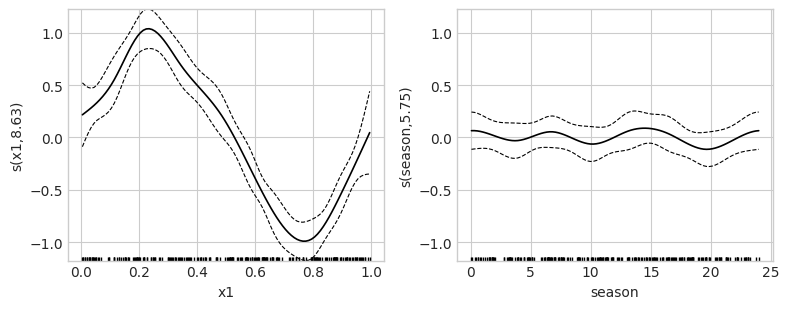
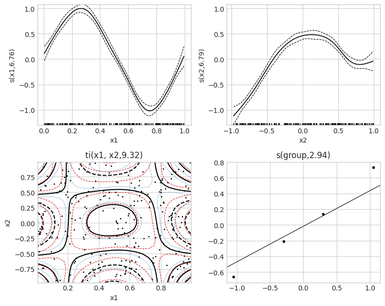
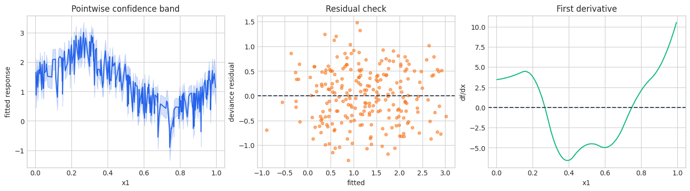

Complete GAM guide
This notebook is a theory-first reference to NAMpy’s statistical GAM backend. It covers the formula and array interfaces, smooth construction, structured effects, shape constraints, response families, smoothness selection, inference, diagnostics, and multi-parameter GAMLSS models. Related bases share compact galleries; representative models are fitted rather than repeating identical boilerplate for every code.
1. Penalized regression splines
For response \(y_i\) and conditional mean \(\mu_i\), a GAM uses
Each basis dimension \(K_j\) is finite. Smoothness is controlled by \(\lambda_j\boldsymbol\beta_j^\top\mathbf S_j\boldsymbol\beta_j\), not by selecting a single polynomial degree. Large \(K_j\) supplies capacity; large \(\lambda_j\) suppresses wiggliness. Side conditions remove overlap between smooth null spaces, the intercept, and other terms.
Effective degrees of freedom summarize the flexibility remaining after penalization. They are generally non-integer. Covariance and confidence bands are conditional on the fitted model; optional unconditional covariance also propagates estimated smoothing-parameter uncertainty.
2. Data and execution configuration
[1]:
from pathlib import Path
import tempfile
import time
import warnings
import matplotlib.pyplot as plt
import numpy as np
import pandas as pd
warnings.filterwarnings("ignore", category=FutureWarning)
plt.style.use("seaborn-v0_8-whitegrid")
COLORS = ["#2563EB", "#F97316", "#10B981", "#8B5CF6", "#EF4444"]
FAST_MODE = True
N_SAMPLES = 160 if FAST_MODE else 5000
MAX_EPOCHS = 2 if FAST_MODE else 150
MAX_STEPS = 2 if FAST_MODE else -1
RANDOM_STATE = 7
CHECKPOINT_ROOT = Path(tempfile.mkdtemp(prefix="nampy-notebook-"))
NEURAL_FIT_KWARGS = {
"max_epochs": MAX_EPOCHS,
"max_steps": MAX_STEPS,
"batch_size": 64 if FAST_MODE else 256,
"random_state": RANDOM_STATE,
"checkpoint_path": CHECKPOINT_ROOT,
"logger": False,
"enable_progress_bar": False,
"enable_model_summary": False,
"num_sanity_val_steps": 0,
}
rng = np.random.default_rng(RANDOM_STATE)
n = N_SAMPLES + (80 if FAST_MODE else 0)
x1 = rng.uniform(0.0, 1.0, n)
x2 = rng.uniform(-1.0, 1.0, n)
season = rng.uniform(0.0, 24.0, n)
group = pd.Categorical(rng.choice(["a", "b", "c", "d"], size=n))
group_effect = pd.Series(group).map({"a": -0.5, "b": 0.2, "c": 0.8, "d": -0.1}).astype(float).to_numpy()
surface = 0.9 * np.sin(np.pi * x1) * np.cos(np.pi * x2)
mu = 1.2 + np.sin(2 * np.pi * x1) + 0.35 * x2 + surface + group_effect
exposure = rng.uniform(0.5, 2.5, n)
data = pd.DataFrame({
"x1": x1, "x2": x2, "season": season, "group": group,
"exposure": exposure, "log_exposure": np.log(exposure),
})
data["y"] = mu + rng.normal(0.0, 0.25, n)
data["binary"] = rng.binomial(1, 1 / (1 + np.exp(-(-0.5 + mu))))
rate = np.exp(0.2 + 0.7 * np.sin(2 * np.pi * x1)) * exposure
data["count"] = rng.poisson(rate)
data["gamma"] = rng.gamma(shape=6.0, scale=np.exp(0.4 + 0.4 * x1) / 6.0)
data["beta"] = np.clip(rng.beta(2.0 + 2.0 * x1, 3.0), 1e-5, 1 - 1e-5)
data["ordinal"] = pd.cut(mu, bins=[-np.inf, 0.8, 1.6, 2.4, np.inf], labels=False) + 1
data["positive"] = np.maximum(0.0, rng.gamma(2.0, 0.5, n) - 0.35)
sigma = np.exp(-1.3 + 0.7 * (x2 + 1) / 2)
data["hetero"] = 1.0 + np.sin(2 * np.pi * x1) + sigma * rng.normal(size=n)
data["gamma_lss"] = rng.gamma(shape=1 / 0.25**2, scale=np.exp(0.2 + 0.5 * x1) * 0.25**2)
data.head()
[1]:
| x1 | x2 | season | group | exposure | log_exposure | y | binary | count | gamma | beta | ordinal | positive | hetero | gamma_lss | |
|---|---|---|---|---|---|---|---|---|---|---|---|---|---|---|---|
| 0 | 0.625095 | -0.241361 | 7.023409 | a | 0.568153 | -0.565364 | 0.727774 | 0 | 0 | 1.324666 | 0.456304 | 1 | 2.700527 | 0.529906 | 1.703753 |
| 1 | 0.897214 | -0.494451 | 7.030132 | a | 1.308638 | 0.268987 | -0.163390 | 0 | 0 | 4.075249 | 0.610358 | 1 | 1.017491 | 0.728242 | 2.290064 |
| 2 | 0.775686 | -0.086980 | 10.337878 | d | 1.655917 | 0.504355 | 0.364507 | 0 | 1 | 1.192106 | 0.764845 | 1 | 0.190409 | -0.136088 | 1.697323 |
| 3 | 0.225207 | 0.314488 | 23.977410 | d | 1.006837 | 0.006814 | 2.132462 | 1 | 3 | 2.455830 | 0.257287 | 4 | 0.053814 | 2.009079 | 1.590799 |
| 4 | 0.300166 | -0.797802 | 8.461247 | c | 1.196430 | 0.179342 | 1.910444 | 1 | 7 | 1.820847 | 0.118092 | 3 | 0.000000 | 1.535253 | 1.413327 |
3. Formula and array interfaces
Formula mode preserves named parametric terms, categorical contrasts, smooth specifications, offsets, and multi-predictor formulas. Array mode is compact and sklearn-friendly: each input column receives the adapter’s common basis and dimension. Use formula mode when terms need different bases or structured effects.
[2]:
from nampy.gam import GAM
from nampy.models import GAMClassifier, GAMLSS, GAMRegressor
formula_gam = GAM(
formula="y ~ x2 + group + s(x1, bs='cr', k=10) + s(season, bs='cc', k=8)",
family="gaussian",
smoothing_method="reml",
).fit(data=data)
array_gam = GAMRegressor(k=9, basis="cr", smoothing_method="reml").fit(
data[["x1", "x2"]], data["y"]
)
formula_prediction, formula_se = formula_gam.predict(data, type="response", return_se=True)
array_prediction = array_gam.predict(data[["x1", "x2"]])
display(formula_gam.summary())
display(pd.DataFrame({
"interface": ["formula", "array"],
"prediction shape": [formula_prediction.shape, array_prediction.shape],
"intercept": [
formula_gam.fit_result(include_covariances=False).intercept,
array_gam.gam_.fit_result(include_covariances=False).intercept,
],
}))
Family: gaussian
Link function: identity
Formula:
y ~ x2 + group + s(x1, bs='cr', k=10) + s(season, bs='cc', k=8)
Parametric coefficients:
Estimate Std. Error t value Pr(>|t|)
(Intercept) 0.57777 0.067378 8.5751 1.755e-15 ***
x2 0.46828 0.060159 7.7841 2.695e-13 ***
group[b] 0.82721 0.090211 9.1697 <2e-16 ***
group[c] 1.4158 0.098073 14.437 <2e-16 ***
group[d] 0.49269 0.092823 5.3079 2.698e-07 ***
---
Signif. codes: 0 '***' 0.001 '**' 0.01 '*' 0.05 '.' 0.1 ' ' 1
Approximate significance of smooth terms:
edf Ref.df F p-value
s(x1) 8.6333 8.9604 45.441 <2e-16 ***
s(season) 5.7548 6 0.52101 0.7743
---
Signif. codes: 0 '***' 0.001 '**' 0.01 '*' 0.05 '.' 0.1 ' ' 1
R-sq.(adj) = 0.748 Deviance explained = 76.7%
Scale est. = 0.24023 n = 240
GAMSummary(family_name='gaussian', link_name='identity', formula="y ~ x2 + group + s(x1, bs='cr', k=10) + s(season, bs='cc', k=8)", p_coeff=array([0.57777364, 0.46828359, 0.82720639, 1.41583613, 0.49269182]), se=array([0.06737768, 0.06015866, 0.09021103, 0.09807328, 0.09282286,
0.13672281, 0.10398695, 0.11323893, 0.11334642, 0.10387469,
0.10838754, 0.10649807, 0.11042186, 0.20266329, 0.0946373 ,
0.08376293, 0.09210184, 0.0974602 , 0.08906054, 0.09600436]), p_t=array([ 8.57514851, 7.78414221, 9.16968137, 14.43651194, 5.30787134]), p_pv=array([1.75464297e-15, 2.69488344e-13, 3.43030093e-17, 1.05224197e-33,
2.69755514e-07]), p_table= Estimate Std. Error t value Pr(>|t|)
(Intercept) 0.577774 0.067378 8.575149 1.754643e-15
x2 0.468284 0.060159 7.784142 2.694883e-13
group[b] 0.827206 0.090211 9.169681 3.430301e-17
group[c] 1.415836 0.098073 14.436512 1.052242e-33
group[d] 0.492692 0.092823 5.307871 2.697555e-07, pterms_table= label df wald_stat p_value test covariance dispersion
0 x2 1.0 60.592870 2.694883e-13 F bayes 0.240226
1 group 3.0 73.296219 6.302115e-33 F bayes 0.240226, s_table= label edf ref_df wald_stat p_value test term_type \
0 s(x1) 8.633252 8.960351 45.441233 0.000000 F smooth
1 s(season) 5.754788 6.000000 0.521014 0.774287 F smooth
basis_name covariance dispersion
0 cr bayes 0.240226
1 cc bayes 0.240226 , residual_df=220.61195980289062, m=2, scale=0.2402256443505984, dispersion=0.2402256443505984, scale_estimated=True, r_sq=0.747760317135475, dev_expl=0.7671669841974791, null_deviance=227.61656035949485, deviance=52.996650195097715, n=240, np=20, rank=20, method=None, sp_criterion=None, covariance='bayes', edf_total=19.38804019710939, metadata={})
| interface | prediction shape | intercept | |
|---|---|---|---|
| 0 | formula | (240,) | 0.577774 |
| 1 | array | (240,) | 1.260042 |
3.1 Prediction, uncertainty, offsets, and plots
type="link" predicts \(\eta\); type="response" applies the inverse link; type="terms" returns identified term contributions; and type="lpmatrix" returns the design mapping coefficients to predictors. Standard errors are pointwise, not simultaneous bands. An offset is supplied in the formula with offset(...) or through the fit/predict argument and is never estimated.
[3]:
link = formula_gam.predict(data, type="link")
term_values = formula_gam.predict(data, type="terms", return_se=True)
Xp = formula_gam.lpmatrix(data)
formula_gam.plot(pages=1, se=True)
offset_gam = GAM(
formula="count ~ s(x1, bs='cr', k=8) + offset(log_exposure)",
family="poisson",
smoothing_method="ubre",
).fit(data=data)
display({"link shape": link.shape, "lpmatrix shape": Xp.shape, "offset AIC": offset_gam.aic()})
{'link shape': (240,),
'lpmatrix shape': (240, 20),
'offset AIC': 751.426753770295}

4. Formula language and smooth bases
Basis choice encodes geometry and boundary behavior. Shrinkage variants add a penalty to the usual null space so an entire smooth can approach zero. Tensor products are appropriate when predictors use different units. Random and factor-specific smooths encode grouped structures.
The gallery is executable specification: constructing every object checks that the installed parser recognizes the formula. Related bases share a comparison row because their fitting workflow is identical.
[4]:
formula_gallery = pd.DataFrame([
("B-spline derivatives", "bs", "y ~ s(x1, bs='bs', k=9, m=[3, 2])"),
("cubic regression", "cr / cs", "y ~ s(x1, bs='cr', k=9)"),
("cyclic cubic / P-spline", "cc / cp", "y ~ s(season, bs='cc', k=9)"),
("Duchon spline", "ds", "y ~ s(x1, x2, bs='ds', k=16)"),
("Gaussian-process smooth", "gp", "y ~ s(x1, x2, bs='gp', k=16)"),
("P-spline", "ps", "y ~ s(x1, bs='ps', k=9)"),
("spherical spline", "sos", "y ~ s(latitude, longitude, bs='sos', k=20)"),
("thin plate / shrinkage", "tp / ts", "y ~ s(x1, x2, bs='tp', k=16)"),
("Markov random field", "mrf", "y ~ s(region, bs='mrf', xt={'nb': neighbors})"),
("random effect", "re", "y ~ s(group, bs='re')"),
("factor-specific", "fs / sz", "y ~ s(group, x1, bs='fs', k=6, xt='cr')"),
("full tensor product", "te", "y ~ te(x1, x2, bs=['cr', 'ps'], k=[6, 6])"),
("pure tensor interaction", "ti", "y ~ s(x1) + s(x2) + ti(x1, x2, k=[6, 6])"),
], columns=["intended use", "basis", "formula"])
constructible = {
row.basis: GAM(formula=row.formula)
for row in formula_gallery.itertuples()
if row.basis not in {"mrf", "sos"}
}
formula_gallery
[4]:
| intended use | basis | formula | |
|---|---|---|---|
| 0 | B-spline derivatives | bs | y ~ s(x1, bs='bs', k=9, m=[3, 2]) |
| 1 | cubic regression | cr / cs | y ~ s(x1, bs='cr', k=9) |
| 2 | cyclic cubic / P-spline | cc / cp | y ~ s(season, bs='cc', k=9) |
| 3 | Duchon spline | ds | y ~ s(x1, x2, bs='ds', k=16) |
| 4 | Gaussian-process smooth | gp | y ~ s(x1, x2, bs='gp', k=16) |
| 5 | P-spline | ps | y ~ s(x1, bs='ps', k=9) |
| 6 | spherical spline | sos | y ~ s(latitude, longitude, bs='sos', k=20) |
| 7 | thin plate / shrinkage | tp / ts | y ~ s(x1, x2, bs='tp', k=16) |
| 8 | Markov random field | mrf | y ~ s(region, bs='mrf', xt={'nb': neighbors}) |
| 9 | random effect | re | y ~ s(group, bs='re') |
| 10 | factor-specific | fs / sz | y ~ s(group, x1, bs='fs', k=6, xt='cr') |
| 11 | full tensor product | te | y ~ te(x1, x2, bs=['cr', 'ps'], k=[6, 6]) |
| 12 | pure tensor interaction | ti | y ~ s(x1) + s(x2) + ti(x1, x2, k=[6, 6]) |
4.1 Parametric terms and smoothness sharing
Numeric and categorical parametric terms use ordinary model-matrix columns. x1:x2 is a parametric interaction. A shared id= pools basis construction and smoothing parameters across compatible smooths. select=True adds null-space selection penalties. pc= imposes a point constraint such as \(f(0)=0\). sp= fixes a term’s smoothing parameter; omitted values are selected when automatic smoothing is enabled.
[5]:
language_examples = {
"parametric": GAM(formula="y ~ x1 + group + x1:group"),
"shared smoothing": GAM(formula="y ~ s(x1, bs='cr', id='shared') + s(x2, bs='cr', id='shared')"),
"term selection": GAM(formula="y ~ s(x1, bs='ts', k=10)", select=True),
"point constraint": GAM(formula="y ~ s(x1, bs='cr', k=10, pc=0.0)"),
"fixed smoothing": GAM(formula="y ~ s(x1, bs='cr', k=10, sp=0.8)"),
}
sorted(language_examples)
[5]:
['fixed smoothing',
'parametric',
'point constraint',
'shared smoothing',
'term selection']
5. Main effects, interactions, and grouped structure
A tensor interaction separates marginal trends from a residual surface. Random effects use ridge penalties and partial pooling. Factor-specific smooths allow a curve per group: fs applies per-level penalties, while sz uses sum-to-zero constraints so deviations are interpreted around a population curve. Shared smoothing parameters reduce the number of hyperparameters when scientific reasoning supports common roughness.
[6]:
structured = GAM(
formula=(
"y ~ s(x1, bs='cr', k=8) + s(x2, bs='cr', k=8) "
"+ ti(x1, x2, bs=['cr', 'cr'], k=[5, 5]) + s(group, bs='re')"
),
family="gaussian",
smoothing_method="reml",
).fit(data=data)
structured_terms = structured.predict(data, type="terms")
structured.plot(pages=1, se=True, n2=30)
display(structured.summary())
Family: gaussian
Link function: identity
Formula:
y ~ s(x1, bs='cr', k=8) + s(x2, bs='cr', k=8) + ti(x1, x2, bs=['cr', 'cr'], k=[5, 5]) + s(group, bs='re')
Parametric coefficients:
Estimate Std. Error t value Pr(>|t|)
(Intercept) 1.278 0.12343 10.354 <2e-16 ***
---
Signif. codes: 0 '***' 0.001 '**' 0.01 '*' 0.05 '.' 0.1 ' ' 1
Approximate significance of smooth terms:
edf Ref.df F p-value
s(x1) 6.761 6.9734 243.51 <2e-16 ***
s(x2) 6.7869 6.98 107.01 <2e-16 ***
ti(x1, x2) 9.3244 11.87 11.856 <2e-16 ***
s(group) 2.9441 3 268.33 <2e-16 ***
---
Signif. codes: 0 '***' 0.001 '**' 0.01 '*' 0.05 '.' 0.1 ' ' 1
R-sq.(adj) = 0.937 Deviance explained = 94.4%
Scale est. = 0.05987 n = 240
GAMSummary(family_name='gaussian', link_name='identity', formula="y ~ s(x1, bs='cr', k=8) + s(x2, bs='cr', k=8) + ti(x1, x2, bs=['cr', 'cr'], k=[5, 5]) + s(group, bs='re')", p_coeff=array([1.27803136]), se=array([0.12343228, 0.0596042 , 0.0492317 , 0.05392305, 0.04801951,
0.05736465, 0.05301277, 0.09800791, 0.06714869, 0.0530108 ,
0.05762367, 0.05331075, 0.05240847, 0.05696552, 0.09958005,
0.11101136, 0.09211787, 0.10355703, 0.14315713, 0.11146588,
0.08365471, 0.09902281, 0.1507523 , 0.11045715, 0.09040988,
0.1028485 , 0.15820211, 0.12809775, 0.12631614, 0.12897461,
0.2259239 , 0.12592877, 0.12521253, 0.12615619, 0.12555125]), p_t=array([10.35410989]), p_pv=array([1.29393191e-20]), p_table= Estimate Std. Error t value Pr(>|t|)
(Intercept) 1.278031 0.123432 10.35411 1.293932e-20, pterms_table=Empty DataFrame
Columns: [label, df, wald_stat, p_value, test, covariance, dispersion]
Index: [], s_table= label edf ref_df wald_stat p_value test \
0 s(x1) 6.760958 6.973394 243.507790 0.0 F
1 s(x2) 6.786868 6.979980 107.011667 0.0 F
2 ti(x1, x2) 9.324386 11.869554 11.856245 0.0 F
3 s(group) 2.944128 3.000000 268.329634 0.0 F
term_type basis_name covariance dispersion
0 smooth cr bayes 0.05987
1 smooth cr bayes 0.05987
2 tensor_interaction ti(cr,cr) bayes 0.05987
3 random_effect re bayes 0.05987 , residual_df=213.18365990840695, m=4, scale=0.059869681025702046, dispersion=0.059869681025702046, scale_estimated=True, r_sq=0.9371361479914134, dev_expl=0.9439265855768579, null_deviance=227.61656035949485, deviance=12.76323771860807, n=240, np=35, rank=35, method=None, sp_criterion=None, covariance='bayes', edf_total=26.81634009159306, metadata={})

5.1 Periodic, spatial, and spherical effects
Cyclic bases identify the endpoints of a known period. MRF smooths couple adjacent regions through a graph Laplacian and require a neighbor graph, polygons, or a supplied penalty. Spherical splines treat latitude and longitude as coordinates on a sphere; ordinary planar smooths can distort global geometry. These compact objects document the required formulas without inventing a large external map dataset.
[7]:
cyclic = GAM(formula="y ~ s(season, bs='cc', k=10)", smoothing_method="reml").fit(data=data)
neighbors = {"north": ["central"], "central": ["north", "south"], "south": ["central"]}
spatial = GAM(formula="y ~ s(region, bs='mrf', xt={'nb': neighbors})")
spherical = GAM(formula="y ~ s(latitude, longitude, bs='sos', k=20)")
grid = pd.DataFrame({"season": np.linspace(0, 24, 200)})
cycle = cyclic.predict(grid)
display({"endpoint difference": float(abs(cycle[0] - cycle[-1])), "spatial formula": spatial.formula})
{'endpoint difference': 0.002638384650427872,
'spatial formula': "y ~ s(region, bs='mrf', xt={'nb': neighbors})"}
6. Shape-constrained additive models
Shape constraints encode qualitative prior knowledge in the coefficient parameterization. They are not post-fit clipping. First derivatives test monotonicity; second derivatives test curvature. Positivity and anchoring constrain function levels. Numeric-by and local bases apply restrictions to varying-coefficient or subdomain effects. Bivariate codes constrain directions or curvature of surfaces.
[8]:
shape_reference = pd.DataFrame([
("mpi", "monotone increasing"), ("mpd", "monotone decreasing"),
("cx", "convex"), ("cv", "concave"),
("micx", "increasing and convex"), ("micv", "increasing and concave"),
("mdcx", "decreasing and convex"), ("mdcv", "decreasing and concave"),
("po", "positive"), ("ipo", "increasing positive"), ("dpo", "decreasing positive"),
("miso", "anchored increasing"), ("mifo", "anchored decreasing"),
("mpiby / mpdby", "numeric-by monotonicity"),
("cxby / cvby / micxby / micvby / mdcxby / mdcvby", "numeric-by curvature"),
("lmpi / lipl", "local constraints"), ("cpop", "locally positive cyclic effect"),
("tedmi / tedmd", "tensor monotonicity"),
("temicx / temicv / tedecx / tedecv", "tensor monotonicity plus curvature"),
("tecxcx / tecvcv / tecxcv", "bivariate curvature"),
("tesmi1 / tesmd1 / tesmi2 / tesmd2", "single-direction monotonicity"),
("tismi / tismd", "tensor-interaction monotonicity"),
("tescx / tescv", "single-direction curvature"),
], columns=["basis code", "mathematical property"])
shape_reference
[8]:
| basis code | mathematical property | |
|---|---|---|
| 0 | mpi | monotone increasing |
| 1 | mpd | monotone decreasing |
| 2 | cx | convex |
| 3 | cv | concave |
| 4 | micx | increasing and convex |
| 5 | micv | increasing and concave |
| 6 | mdcx | decreasing and convex |
| 7 | mdcv | decreasing and concave |
| 8 | po | positive |
| 9 | ipo | increasing positive |
| 10 | dpo | decreasing positive |
| 11 | miso | anchored increasing |
| 12 | mifo | anchored decreasing |
| 13 | mpiby / mpdby | numeric-by monotonicity |
| 14 | cxby / cvby / micxby / micvby / mdcxby / mdcvby | numeric-by curvature |
| 15 | lmpi / lipl | local constraints |
| 16 | cpop | locally positive cyclic effect |
| 17 | tedmi / tedmd | tensor monotonicity |
| 18 | temicx / temicv / tedecx / tedecv | tensor monotonicity plus curvature |
| 19 | tecxcx / tecvcv / tecxcv | bivariate curvature |
| 20 | tesmi1 / tesmd1 / tesmi2 / tesmd2 | single-direction monotonicity |
| 21 | tismi / tismd | tensor-interaction monotonicity |
| 22 | tescx / tescv | single-direction curvature |
[9]:
shape_data = pd.DataFrame({"x": np.linspace(0, 1, n)})
shape_data["increasing"] = 1 + 3 * (1 - np.exp(-4 * shape_data["x"])) + rng.normal(0, 0.08, n)
shape_data["convex"] = 0.5 + 2.0 * shape_data["x"]**2 + rng.normal(0, 0.06, n)
monotone = GAM(
formula="increasing ~ s(x, bs='mpi', k=10)",
optimize_smoothing=False, smoothing_method="fixed", smoothing_params=[0.5],
).fit(data=shape_data)
convex = GAM(
formula="convex ~ s(x, bs='cx', k=10)",
optimize_smoothing=False, smoothing_method="fixed", smoothing_params=[0.5],
).fit(data=shape_data)
d1 = monotone.derivative(smooth_number=1, deriv=1).derivative
d2 = convex.derivative(smooth_number=1, deriv=2).derivative
assert d1.min() >= -1e-6
assert d2.min() >= -1e-6
display({"minimum first derivative": d1.min(), "minimum second derivative": d2.min()})
{'minimum first derivative': 0.34771668790873866,
'minimum second derivative': 0.0}
7. Response families and links
The family determines support, variance, likelihood, deviance, residuals, and inverse-link interpretation. The same smooth formula is therefore not a substitute for choosing a scientifically appropriate distribution. The examples below simulate responses on the required support and report one family-appropriate check.
[10]:
family_specs = {
"Gaussian": ("y", "gaussian", "y ~ s(x1, bs='cr', k=8) + x2"),
"Binomial": ("binary", "binomial", "binary ~ s(x1, bs='cr', k=8) + x2"),
"Poisson": ("count", "poisson", "count ~ s(x1, bs='cr', k=8) + offset(log_exposure)"),
"Gamma": ("gamma", {"name": "gamma", "link": "log"}, "gamma ~ s(x1, bs='cr', k=8)"),
"Negative binomial": ("count", {"name": "nb"}, "count ~ s(x1, bs='cr', k=8) + offset(log_exposure)"),
"Beta": ("beta", {"name": "betar", "theta": 8.0}, "beta ~ s(x1, bs='cr', k=8)"),
"Tweedie": ("positive", {"name": "tweedie", "link": "log"}, "positive ~ s(x1, bs='cr', k=8)"),
"Ordered categorical": ("ordinal", {"name": "ocat", "R": 4}, "ordinal ~ s(x1, bs='cr', k=8)"),
}
family_rows = []
family_models = {}
for label, (target, family, formula) in family_specs.items():
method = "ubre" if label == "Poisson" else "reml"
candidate = GAM(formula=formula, family=family, smoothing_method=method).fit(data=data)
family_models[label] = candidate
fitted = np.asarray(candidate.predict(data, type="response"))
family_rows.append({
"family": label,
"finite predictions": bool(np.isfinite(fitted).all()),
"prediction minimum": float(np.min(fitted)),
"deviance residual RMS": float(np.sqrt(np.mean(candidate.residuals(type="deviance")**2))),
})
pd.DataFrame(family_rows)
[10]:
| family | finite predictions | prediction minimum | deviance residual RMS | |
|---|---|---|---|---|
| 0 | Gaussian | True | -0.058786 | 0.669675 |
| 1 | Binomial | True | 0.338648 | 1.065651 |
| 2 | Poisson | True | 0.389765 | 0.994880 |
| 3 | Gamma | True | 1.448257 | 0.386918 |
| 4 | Negative binomial | True | 0.389765 | 0.994877 |
| 5 | Beta | True | 0.331917 | 1.098874 |
| 6 | Tweedie | True | 0.472319 | 1.066770 |
| 7 | Ordered categorical | True | 0.014442 | 1.443130 |
8. Selecting smoothness
Fixed smoothing is useful for controlled comparisons. GCV/Cp and UBRE estimate predictive risk; ML, REML, and LAML use marginal-likelihood criteria. REML is a strong default for many ordinary GAMs. Outer Newton uses derivatives, BFGS is quasi-Newton, EFS is extended Fellner-Schall, and the optim route can use methods such as L-BFGS-B where supported. Availability depends jointly on family, criterion, and optimizer.
[11]:
smoothness_routes = [
("fixed", False, "fixed", "outer_newton", None),
("GCV/Cp", True, "gcv", "outer_newton", None),
("REML Newton", True, "reml", "outer_newton", None),
("REML BFGS", True, "reml", "bfgs", None),
("REML EFS", True, "reml", "efs", None),
("REML optim/L-BFGS-B", True, "reml", "optim", "L-BFGS-B"),
]
selection_rows = []
for label, optimize, method, optimizer, optim_method in smoothness_routes:
started = time.perf_counter()
kwargs = dict(
formula="y ~ s(x1, bs='cr', k=10)", family="gaussian",
optimize_smoothing=optimize, smoothing_method=method,
smoothing_optimizer=optimizer,
)
if not optimize:
kwargs["smoothing_params"] = [0.7]
if optim_method is not None:
kwargs["optim_method"] = optim_method
candidate = GAM(**kwargs).fit(data=data)
result = candidate.fit_result(include_covariances=False)
selection_rows.append({
"route": label,
"fit seconds": time.perf_counter() - started,
"EDF": result.edf_total,
"criterion": result.criterion_value,
"smoothing parameter": result.smoothing_params[0],
})
selection_table = pd.DataFrame(selection_rows)
selection_table
[11]:
| route | fit seconds | EDF | criterion | smoothing parameter | |
|---|---|---|---|---|---|
| 0 | fixed | 0.124734 | 9.742437 | NaN | 0.700000 |
| 1 | GCV/Cp | 1.111831 | 5.732176 | 0.510515 | 84.806366 |
| 2 | REML Newton | 1.431619 | 6.502093 | 265.117973 | 41.129305 |
| 3 | REML BFGS | 3.034044 | 6.502080 | 265.117973 | 41.129803 |
| 4 | REML EFS | 1.098485 | 6.502086 | 265.117973 | 41.129562 |
| 5 | REML optim/L-BFGS-B | 2.788102 | 6.502076 | 265.117973 | 41.129942 |
9. Inference and diagnostics
Confidence bands describe estimated-function uncertainty under the model; residual plots examine distributional assumptions; derivatives describe rates of change. ANOVA compares nested models when its assumptions apply. AIC/BIC and log likelihood compare fit against complexity. Concurvity is the smooth analogue of collinearity. k_check asks whether a chosen basis dimension leaves residual pattern, and gam_check combines comparable residual and basis-dimension checks with local optimizer
information.
[12]:
good = GAM(formula="y ~ s(x1, bs='cr', k=12) + s(x2, bs='cr', k=9)", smoothing_method="reml").fit(data=data)
poor = GAM(formula="y ~ s(x1, bs='cr', k=4)", smoothing_method="reml").fit(data=data)
diagnostic_report = {
"log likelihood": good.loglik(),
"AIC": good.aic(),
"BIC": good.bic(),
"covariance shape": good.vcov().shape,
"residual RMS": float(np.sqrt(np.mean(good.residuals(type="deviance")**2))),
}
poor_k = poor.k_check(subsample=min(len(data), 200), n_rep=20, seed=RANDOM_STATE)
poor_check = poor.gam_check(k_sample=min(len(data), 200), k_rep=20, seed=RANDOM_STATE)
concurvity = good.concurvity()
anova_table = poor.anova(good, test="F")
display(diagnostic_report)
display(poor_k)
display(anova_table)
{'log likelihood': -199.21799895773694,
'AIC': 438.8981847576252,
'BIC': 509.31531598078925,
'covariance shape': (20, 20),
'residual RMS': 0.5549576149855296}
| k_prime | edf | k_index | p_value | |
|---|---|---|---|---|
| label | ||||
| s(x1) | 3 | 2.954146 | 0.952995 | 0.15 |
AnovaGAMComparison(family_name='gaussian', test='F', table= Resid. Df Resid. Dev Df Deviance F Pr(>F)
0 236.001672 117.437395 NaN NaN NaN NaN
1 220.089306 73.914709 15.912366 43.522686 8.169359 3.289948e-15)
[13]:
prediction, se = good.predict(data, type="response", return_se=True)
derivative_model = GAM(
formula="y ~ s(x1, bs='ps', k=10)",
optimize_smoothing=False,
smoothing_method="fixed",
smoothing_params=[0.7],
).fit(data=data)
derivative = derivative_model.derivative(data, smooth_number=1, deriv=1)
order = np.argsort(data["x1"].to_numpy())
fig, axes = plt.subplots(1, 3, figsize=(14, 3.8), constrained_layout=True)
axes[0].plot(data["x1"].to_numpy()[order], prediction[order], color=COLORS[0])
axes[0].fill_between(data["x1"].to_numpy()[order], (prediction - 2*se)[order], (prediction + 2*se)[order], color=COLORS[0], alpha=0.2)
axes[0].set(title="Pointwise confidence band", xlabel="x1", ylabel="fitted response")
axes[1].scatter(prediction, good.residuals(type="deviance"), s=18, alpha=0.55, color=COLORS[1])
axes[1].axhline(0, color="#334155", linestyle="--")
axes[1].set(title="Residual check", xlabel="fitted", ylabel="deviance residual")
axes[2].plot(data["x1"].to_numpy()[order], derivative.derivative[order], color=COLORS[2])
axes[2].axhline(0, color="#334155", linestyle="--")
axes[2].set(title="First derivative", xlabel="x1", ylabel="df/dx")
plt.show()
plt.close(fig)

10. Distributional GAMs
A GAMLSS model assigns one additive predictor to every distribution parameter. For a normal model,
Joint likelihood fitting differs from modeling squared residuals in a second stage: location and scale are estimated together with their joint covariance. Contributions reconstruct each raw parameter predictor. Natural-parameter transforms then enforce domains such as \(\sigma>0\).
[14]:
normal_lss = GAMLSS(
formula=[
"hetero ~ s(x1, bs='cr', k=9)",
"~ s(x2, bs='cr', k=8)",
],
family="normal",
smoothing_method="ml",
).fit(data)
natural = normal_lss.predict(data)
raw = normal_lss.predict(data, raw=True)
point = normal_lss.predict_point(data)
components = normal_lss.predict_components(data)
components.validate_additive_reconstruction()
parameter_importance = normal_lss.term_importance(data)
lower = natural[:, 0] - 1.96 * natural[:, 1]
upper = natural[:, 0] + 1.96 * natural[:, 1]
coverage = np.mean((data["hetero"] >= lower) & (data["hetero"] <= upper))
display({
"parameter names": normal_lss.parameter_names_,
"raw shape": raw.shape,
"natural shape": natural.shape,
"minimum sigma": natural[:, 1].min(),
"95% interval coverage": coverage,
})
display(parameter_importance)
{'parameter names': ('mu', 'sigma'),
'raw shape': (240, 2),
'natural shape': (240, 2),
'minimum sigma': 0.2881437585196322,
'95% interval coverage': 0.9625}
| term | term_type | output | importance | |
|---|---|---|---|---|
| 0 | mu:s(x1, bs='cr', k=9) | interaction | 0 | 0.641511 |
| 1 | sigma:s(x2, bs='cr', k=8) | interaction | 1 | 0.111352 |
| 2 | mu:s(x1, bs='cr', k=9) | interaction | 1 | 0.000000 |
| 3 | sigma:s(x2, bs='cr', k=8) | interaction | 0 | 0.000000 |
10.1 Normal and Gamma location-scale models
gaulss returns natural \((\mu,\sigma)\) despite using a precision-related scale predictor internally. gammals models a positive mean and scale; both are transformed to remain positive. predict(raw=True) exposes the additive predictors, predict returns natural parameters, and predict_point returns the family-defined conditional mean.
[15]:
gamma_lss = GAMLSS(
formula=["gamma_lss ~ s(x1, bs='cr', k=8)", "~ 1"],
family="gamma",
smoothing_method="ml",
).fit(data)
gamma_parameters = gamma_lss.predict(data)
gamma_components = gamma_lss.predict_components(data)
gamma_components.validate_additive_reconstruction()
display({
"normal NLL": normal_lss.evaluate(data, data["hetero"])["Negative Log-Likelihood"],
"gamma NLL": gamma_lss.evaluate(data, data["gamma_lss"])["Negative Log-Likelihood"],
"gamma parameters positive": bool((gamma_parameters > 0).all()),
})
{'normal NLL': 0.3957955326972089,
'gamma NLL': 0.46935598007658114,
'gamma parameters positive': True}
11. Practical model-building sequence
Start with the response support and link, then specify scientifically justified main effects and structures. Give bases enough capacity, select smoothness, and inspect residuals, k_check, concurvity, and sensitivity to plausible basis choices. Add interactions or distributional parameters only when they answer a substantive question. Finally validate on held-out data and persist the complete fitted object.